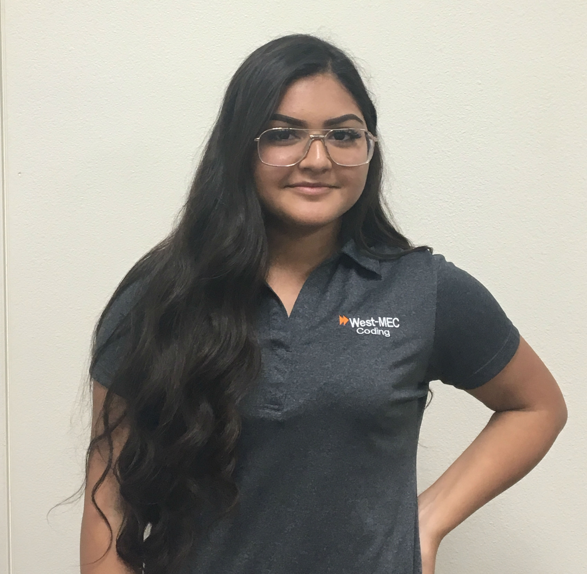

9150 W Hazelwood St., Phoenix, Arizona 85037 | C: 623.850.0894 | E: EvelynDuarte793@yahoo.com
Self-motivated, Hardworking first year Coding student who is able to communicate and able to learn quickly. Seeking the position of Web Developer.
Hello! I am a student in West-Mec and Copper Canyon High School. From adolescence, my main priority has been school. I've dedicated an extraordinary amount of time to school and making an effort to do the best I can in my academics and be the best person I could be.
I was born in San Francisco, California and came to live in Arizona when I was a couple months old. I also used to be a cheerleader for my middle school, WestWind Elementary as well as involved in track for two years.